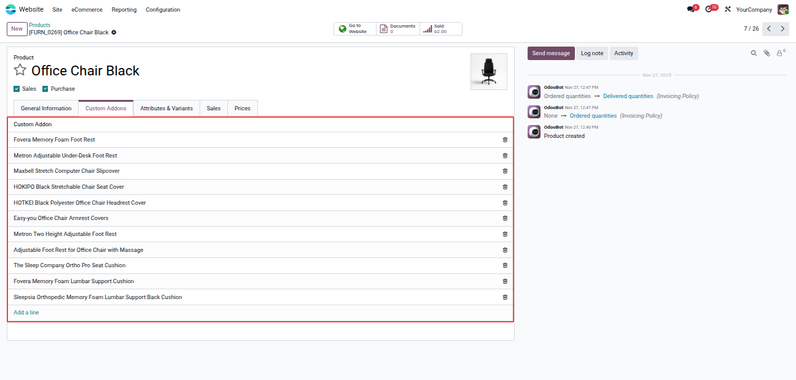
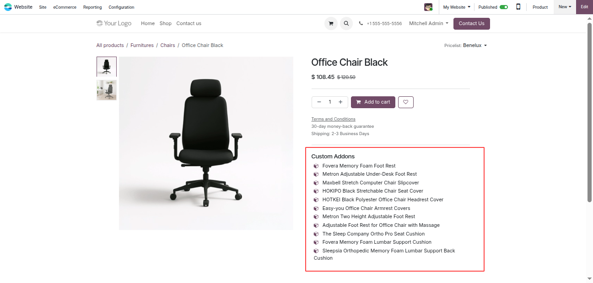
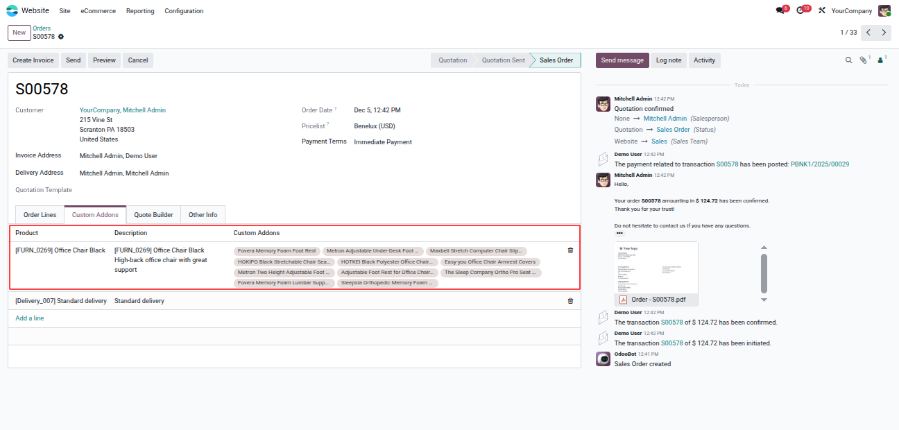

The Website Custom Add-Ons App enhances the product selection and checkout experience in Odoo by enabling customers to configure custom add-ons, flavours, or extra options directly on the product page. This eliminates manual communication and ensures businesses capture precise customer requirements.
By empowering customers to tailor products according to their preferences, the app improves order accuracy, increases customer satisfaction, boosts upselling opportunities, and streamlines the entire ordering workflow.
Users can add custom add-ons based on the product using the new Custom Addons tab in the product form. Create, edit, and manage multiple add-ons with pricing, description, and availability.

Customers can view and select add-ons directly on the product page before adding the item to the cart, enabling full personalization.

All customer-selected add-ons appear inside the Sales Order under a dedicated Custom Addons tab, ensuring visibility for sales and delivery teams.
